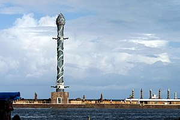

Localizado no coração da cidade do Recife, o Marco Zero é um dos principais pontos turísticos da capital pernambucana. Ele marca o início das medições de distâncias no estado e é um lugar repleto de história e beleza.

O que fazer no Marco Zero?
O local é perfeito para tirar fotos incríveis, especialmente durante o pôr do sol. Além disso, você pode visitar o Parque das Esculturas Francisco Brennand, que fica logo em frente, acessível por barco.
